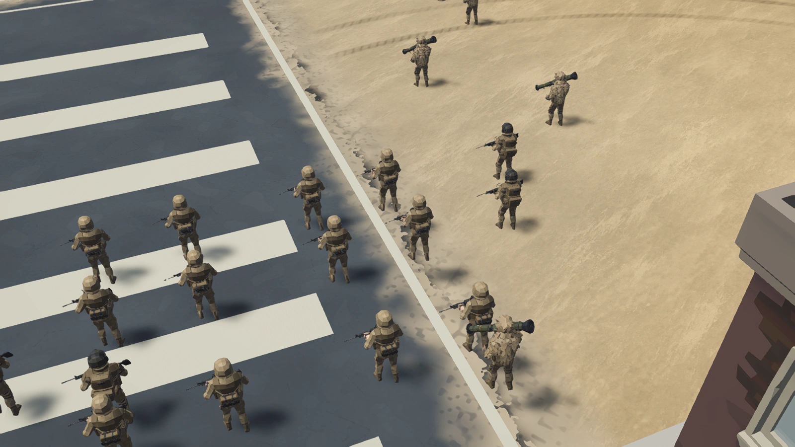

All 14 mapsS002 · Live gameplay
The two zooms come from repeated runs of S002 with seed 104731. Each pair uses a paused match at the same infantry spawn. The left column shows the original asphalt and soldier placement. The right column shows the blended shoulder and corrected soldier footing.
At the S002 spawn, 15 soldiers stood on the raised runway and 5 stood on adjacent sand. The deepest original sole was 1.48 m below the drawn surface. After the fix, the largest measured contact error across these soldiers was 0.00 cm. The game still uses its original unit positions for movement and combat.
Normal gameplay zoom
Soldier close-up
Settled player camera
After the camera settled for 24 rendered frames, the riflemen retained their silhouettes at both detail levels.
